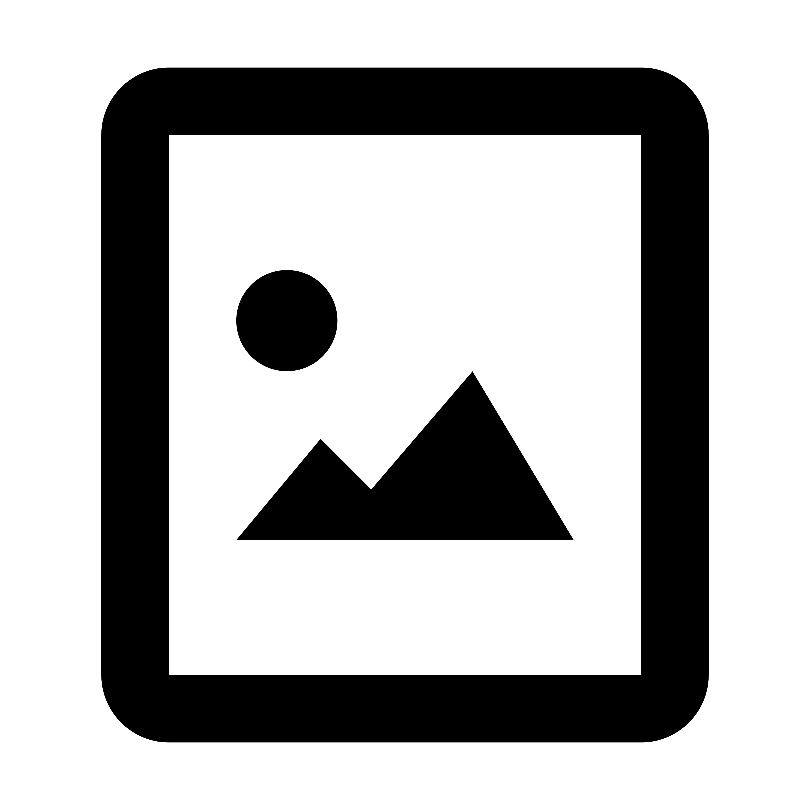

selected_works
an archival collection of academic and personal projects focusing on structural integrity, computational design and interactive systems. 2022-2024.

Img_Placeholder_01
project title
ID_001
Exploration of generative patterns using modular arithmatic. Focus on weight and balance within a constrained 8px grid system.
#systems #typography
Img_Placeholder_02
interactive skill: css hover effect
ID_002
Demonstrating rapid state conversions and colour inversion through standard CSS utility classes. Hover over this card to view the visual transformation.
#interactive #motion
Img_Placeholder_03
project title
ID_003
Multi-dimensional data visualisation for urban traffic flow. Utilising dark-grey scalar values to represent density and frequency.
#data_viz #algorithmic
Img_Placeholder_04
project title
ID_004
Design study of brutalist architechture translated into digital interface components. Emphasis on raw material feel and high contrast.
#brutalism #UI_design
Img_Placeholder_05
project title
ID_005
Responsive system framework for educational platforms. Prioritising information heirachy and accessible data nodes.
#framework #ux_research
Img_Placeholder_06
project title
ID_006
Experimental log of 100 days of layout experiments. Documentation of grid-breaking patterns and asymmetrical balance.
#layout #experimental